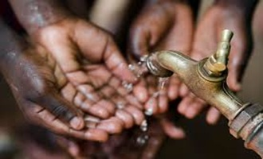
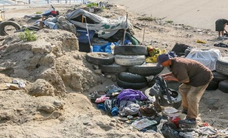
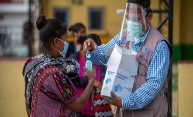

La pobreza no es solo la falta de ingresos económicos; es un fenómeno complejo y multidimensional que priva a las personas de los derechos más fundamentales.
No se trata de una situación de "falta de esfuerzo" o de una condición permanente del individuo.
Cuando una comunidad vive en pobreza, el acceso a servicios esenciales se bloquea, afectando especialmente el *desarrollo de oportunidades*.
Esto genera una situación vulnerable de privaciones crónicas, a pesar de los esfuerzos diarios por mejorar la calidad de vida y la salud de las familias.
* *La desigualdad:* Con el tiempo, la brecha económica se amplía, lo que dificulta que los sectores vulnerables puedan competir en igualdad de condiciones en el mercado laboral.
*La exclusión:* El entorno se adapta de tal forma que perpetúa la falta de recursos, consolidando el *círculo vicioso de la pobreza* (un conjunto de limitaciones físicas, educativas y nutricionales muy severas).

Pilares clave para erradicar la pobreza extrema
Para lograr que una población sea autosuficiente, sana y con un desarrollo económico constante, se deben atender los siguientes factores prioritarios:Educación integral: Se requiere un mínimo de acceso universal a la educación técnica y universitaria para romper ciclos de marginación.Salud comunitaria: La inversión debe ser profunda. Es vital acercar los servicios médicos directamente a las comunidades vulnerables y evitar la falta de medicamentos básicos para prevenir brotes de enfermedades crónicas.Infraestructura y empleo: Se priorizan empleos dignos, justamente remunerados y con un excelente marco de derechos laborales que evite la precarización económica familiar.Políticas públicas: Se realizan intervenciones principalmente enfocadas en la redistribución de la riqueza para eliminar la corrupción o desvíos institucionales, y durante las épocas de crisis se deben activar subsidios directos para estimular nuevos proyectos productivos locales.

Solidaridad global: Las organizaciones internacionales realizan una labor diaria orientando sus recursos económicos de norte a sur siguiendo las pautas de las Naciones Unidas, regresando los excedentes de financiamiento hacia programas de desarrollo sostenible. Al consolidarse los proyectos de infraestructura local, la dependencia de la ayuda externa cesa y los municipios se quedan fijos operando de forma autosuficiente. Cooperación internacional: Cada iniciativa "contra la pobreza" es en realidad una estrategia integral compuesta por cientos de esfuerzos individuales llamados microcréditos que se desarrollan en un patrón comunitario de apoyo mutuo. Origen: Es un desafío histórico que afecta a la población global, acentuado tras las crisis económicas del siglo XXI y el crecimiento demográfico desmedido. Aprovechamiento: Además de su urgencia ética, combatir la pobreza es un objetivo socialmente valioso por la pacificación de las naciones y el bienestar común de las futuras generaciones.